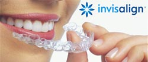

Have misaligned teeth but too ashamed to wear braces to college or work? Your worries end here as more and more hospitals in India are now equipped with a flawless design to bring beauty to your teeth. The new Invisalign treatment is a series of invisible aligners that switch out about every two weeks. Each aligner is individually manufactured with accurate calculations to gradually shift your teeth in place. Since the Invisalign system is custom-made for one’s teeth, you will have a smile that highlights your personality.
Invisalign is an invisible way to straighten teeth sans braces. Invisalign is made of clear removable aligners to straighten teeth without metal wires or brackets. It is nationally acclaimed in clinical research and orthdontic practices. Over 70% of all US orthodontists are certified to treat patients with Invisalign. With Invisalign, the edges are smooth to rule out irritation of gums or cheeks. It is virtually invisible so hardly will anyone know you're straightening your teeth. It can be removed to eat, drink, brush and floss, or for special occasions.